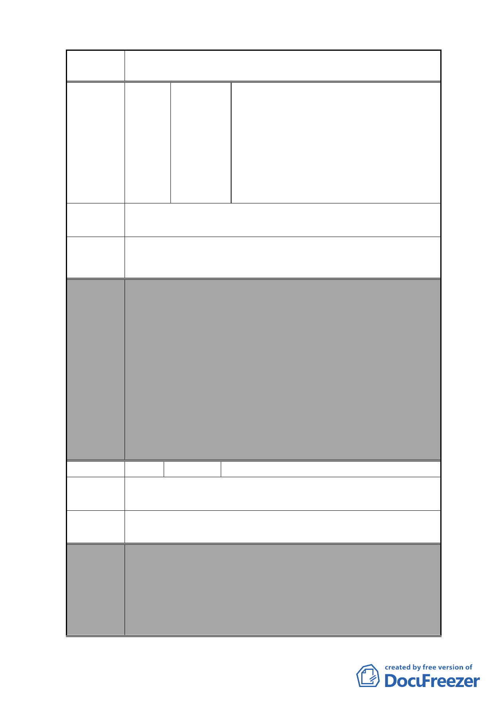

案 名 變更復興北路與長安東路口東北側第三種住宅區為第三種住
宅區（特）細部計畫案
陳情理由
辦公室致楊大中等 79 人 98 年 2 月 24 日
連署書
臺北市議會市民服務中心 98 年 2 月 24
日協調松山區中正里辦公室陳情案會勘
紀錄
臺北市議會市民服務中心 98 年 2 月 25
日協調松山區中正里辦公室陳情案會勘
紀錄
「變更復興北路與長安東路口東北側第三種住宅區為第三種
住宅區（特）細部計畫案」，與本人房舍為同一或相鄰街廓。
建議依「2010 年臺北好好看」開發計畫案原意，將周邊老舊
建議辦法 住宅併入該計畫內。
委員會
決議
編號
陳情理由
本案除以下幾點應再作修正外，其餘依市府本次會議所送修
正計畫書及專案小組審查意見回應資料內容通過。
1.本案有關都市設計管制規定，名稱請統一為都市設計管制
「準則」。
2.計畫書第 31 頁（四）第 1 點有關地下開挖率規定，請予刪
除，依現行市府通案處理原則辦理。
3.計畫書「其他」項內增列「所申請之容積獎勵面積後續於
完成都市設計審議核備及領取建築執照後不得任意變更設
計，如後續確有需要辦理變更設計者，則該部分獎勵面積
須重新審查，若已完成超過部分之獎勵容積樓地板施工
者，則不予核發該部分之使用執照」等文字敘述，以為周
延。
8 陳情人 張藹玲
本區內沒有公共停車空間可供居民停車。
建議辦法 希望提供居民優惠的停車方案。
委員會
決議
本案除以下幾點應再作修正外，其餘依市府本次會議所送修
正計畫書及專案小組審查意見回應資料內容通過。
1.本案有關都市設計管制規定，名稱請統一為都市設計管制
「準則」。
2.計畫書第 31 頁（四）第 1 點有關地下開挖率規定，請予刪
除，依現行市府通案處理原則辦理。
- 80 -